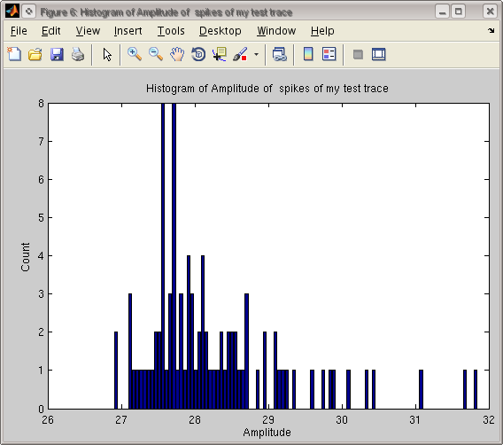
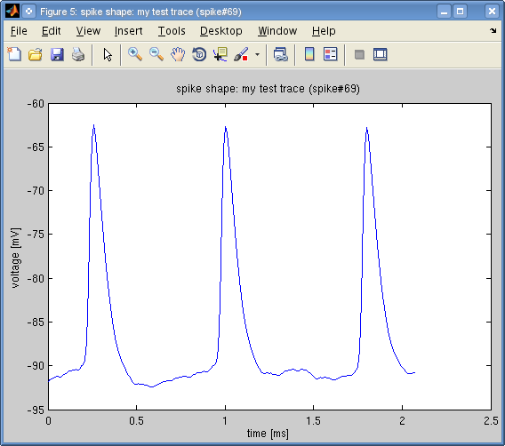

This tutorial assumes you already loaded an intracellular voltage trace and found it spikes in the previous tutorial on Finding Spike Times.
The simplest information about the spikes in a trace can be obtained with:
>> res = getResults(a_trace, a_spikes)
res =
ISICV: 0.9012
SpikeRate: 37.4007
SpikeRateISI: 38.2158
avg: -90.9366
max: -61.5845
min: -96.2524
ISICV is the coefficient of variation (CV) of the interspike intervals (ISIs) in the trace. The two rate estimates SpikeRate and SpikeRateISI are calculated by spike counting and taking the inverse of the average ISI, respectively. The three measurements avg/min/max are obtained from the voltage trace directly.
So this information comes from both the a_trace and a_spikes objects. The getResults function basically collects together the most important information. You may need to write your own functions for the information you'd like to extract. In Pandora these functions are later used to construct databases.
One of Pandora's strengths is having robust functions for finding and measuring spike shape properties like magnitude, width, afterhyperpolarization depth, etc. To extract these measures run:
>> a_prof = getProfileAllSpikes(a_trace)
which will iterate through all the spikes that were found with the previously explained method, and try to extract their properties. It will probably give a lot of warnings about specific spikes, identified by spike numbers that look like this:
Warning: vPP curvature ignored, v' > 15 for my test trace ( spike#6)
> In spike_shape.calcInitVmMaxCurvPhasePlane at 253
In spike_shape.calcInitVm at 117
In spike_shape.getResults at 81
In trace.analyzeSpikesInPeriod at 61
In trace.getProfileAllSpikes at 36
In the end, it should create a trace_allspikes_profile object that contains a lot of sub elements:
trace_allspikes_profile, my test trace
ans =
trace: [1x1 trace]
spikes: [1x1 spikes]
spikes_db: [1x1 spikes_db]
props: [1x1 struct]
results_profile: [1x1 results_profile]
results_profile, my test trace
ans =
results: [1x1 struct]
id: 'my test trace'
props: [0x0 struct]
ISICV: 0.5978
SpikeRate: 204.0041
SpikeRateISI: 208.4925
avg: -90.9366
max: -61.5845
min: -96.2524
SpikeAmplitudeMean: 28.2627
SpikeAmplitudeMode: 27.5673
SpikeAmplitudeSTD: 0.9767
SpikeBaseWidthMean: 0.6540
SpikeBaseWidthMode: 0.2249
SpikeBaseWidthSTD: 0.8345
SpikeDAHPMagMean: 3.0597
SpikeDAHPMagMode: 1.7851
SpikeDAHPMagSTD: 1.2233
SpikeFallTimeMean: 0.5166
SpikeFallTimeMode: 0.1842
SpikeFallTimeSTD: 0.6768
SpikeFixVWidthMean: NaN
SpikeFixVWidthMode: 0
SpikeFixVWidthSTD: NaN
SpikeHalfVmMean: -76.7130
SpikeHalfVmMode: -76.5375
SpikeHalfVmSTD: 0.6417
SpikeHalfWidthMean: 0.0836
SpikeHalfWidthMode: 0.0822
SpikeHalfWidthSTD: 0.0043
SpikeInitTimeMean: 2.1621
SpikeInitTimeMode: 0.9497
SpikeInitTimeSTD: 1.7852
SpikeInitVmBySlopeMean: -92.1183
SpikeInitVmBySlopeMode: -92.1143
SpikeInitVmBySlopeSTD: 1.2867
SpikeInitVmMean: -90.8443
SpikeInitVmMode: -90.4890
SpikeInitVmSTD: 1.0243
SpikeMaxAHPMean: 2.7194
SpikeMaxAHPMode: 0.9797
SpikeMaxAHPSTD: 1.5738
SpikeMaxVmSlopeMean: 910.2486
SpikeMaxVmSlopeMode: 912.8869
SpikeMaxVmSlopeSTD: 26.9367
SpikeMinTimeMean: 3.9272
SpikeMinTimeMode: 1.8205
SpikeMinTimeSTD: 2.1268
SpikeMinVmMean: -93.5484
SpikeMinVmMode: -94.8624
SpikeMinVmSTD: 1.3440
SpikePeakVmMean: -62.5817
SpikePeakVmMode: -62.2192
SpikePeakVmSTD: 0.5015
SpikeRiseTimeMean: 0.3128
SpikeRiseTimeMode: 0.0741
SpikeRiseTimeSTD: 0.5605
Spikes: 102
This summary information is the contents of the results attribute of the parent class result_profile object. At the beginning of this list, you can see the familiar statistical measures that we described at the top of the tutorial. They are followed by detailed spike shape properties, such as SpikeAmplitude. Note that there are three versions of it. Since this is a summary results of all the spikes found, it's still a statistical summary. So there is a Mean, Mode (peak of distribution), and STD (standard deviation) for each measure.
The basic description of the main measures are:
| `SpikeAmplitude` | Amplitude of spike from threshold point to tip in mV. |
| `SpikeBaseWidth` | Width in ms at the threshold level of the spike. |
| `SpikeDAHPMag` | (Experimental) Double afterhyperpolarization (AHP) magnitude in mV. |
| `SpikeFallTime` | Time of repolarization in ms from the tip of the spike to threshold crossing. |
| `SpikeFixVWidth` | Width in ms of the spike at a fixed voltage value (default: -10 mV, modify in `spike_shape/getResults.m`) |
| `SpikeHalfVm` | Voltage in mV at spike half-height. |
| `SpikeHalfWidth` | Width in ms at spike half-height. |
| `SpikeInitTime` | Spike initiation time (at threshold) in ms from start of extracted spike shape. |
| `SpikeInitVmBySlope` | Spike initiation point (threshold) voltage in mV estimated by slope crossing method (see `spike_shape/calcInitVm.m` for different methods) |
| `SpikeInitVm` | Spike threshold voltage in mV estimated by *best* method (First maximum curvature, then slope method is tried. See `spike_shape/calcInitVm.m`). |
| `SpikeMaxAHP` | Maximal magnitude in mV of afterhyperpolarization (AHP). |
| `SpikeMaxVmSlope` | Maximal slope of voltage in mV/ms during spike depolarization (rise). |
| `SpikeMinTime` | Minimum of spike shape in ms starting from beginning of extracted spike shape. |
| `SpikeMinVm` | Absolute voltage in mV at spike minimum. |
| `SpikePeakVm` | Absolute voltage in mV at spike maximum (peak). |
| `SpikeRiseTime` | Time of depolarization in ms from threshold point to the spike tip. |
| `Spikes` | Number of spikes found. |
This is the statistical summary, but how does the individual spike measures look like? We can plot the measures annotated on the spikes with:
>> plot(a_prof.spikes_db)
that gives
If you zoom in horizontally, you can see the measured points in the spikes.

What we plotted above, a_prof.spikes_db is a Pandora database object that contains measurements for each spike. You can inspect it with:
>> a_prof.spikes_db
spikes_db, spikes of my test trace
102 rows in database with 18 columns, and 1 pages.
Column names:
[ 1] 'MinVm'
[ 2] 'PeakVm'
[ 3] 'InitVm'
[ 4] 'InitVmBySlope'
[ 5] 'MaxVmSlope'
[ 6] 'HalfVm'
[ 7] 'Amplitude'
[ 8] 'MaxAHP'
[ 9] 'DAHPMag'
[10] 'InitTime'
[11] 'RiseTime'
[12] 'FallTime'
[13] 'MinTime'
[14] 'BaseWidth'
[15] 'HalfWidth'
[16] 'FixVWidth'
[17] 'Index'
[18] 'Time'
Optional properties of spikes_db:
ans =
0x0 struct array with no fields.
You can see that there are 102 rows in this database that correspond to the spikes found and the 18 columns listed are the ones described in the above table.
You can apply all database operations (see methods tests_db and examples in the paper) on this object, such as plotting histograms. Here's the spike magnitude distribution for this trace:
>> plot(histogram(a_prof.spikes_db, 'Amplitude'))
that gives

To see the values for one spike (e.g., #5), you can run:
>> displayRows(a_prof.spikes_db(5, :))
ans =
'MinVm' [-92.1783]
'PeakVm' [-62.5463]
'InitVm' [-90.2231]
'InitVmBySlope' [-91.3658]
'MaxVmSlope' [901.6673]
'HalfVm' [-76.3847]
'Amplitude' [ 27.6767]
'MaxAHP' [ 1.9553]
'DAHPMag' [ 1.8082]
'InitTime' [ 1.1610]
'RiseTime' [ 0.0650]
'FallTime' [ 0.1800]
'MinTime' [ 1.7300]
'BaseWidth' [ 0.2350]
'HalfWidth' [ 0.0830]
'FixVWidth' [ NaN]
'Index' [ 5]
'Time' [ 25.6300]
And you can reach the actual data of any database object via:
>> a_prof.spikes_db(5, :).data
ans =
Columns 1 through 7
-92.1783 -62.5463 -90.2231 -91.3658 901.6673 -76.3847 27.6767
Columns 8 through 14
1.9553 1.8082 1.1610 0.0650 0.1800 1.7300 0.2350
Columns 15 through 18
0.0830 NaN 5.0000 25.6300
Already in the above zoomed in figure, you can see some spikes were not detected. In this example, I changed the sampling rate to cause these errors. Pandora should normally find most of your spikes. However, often one experiment's parameters may not work for another experiment or animal system.
When there are missing spikes, you can go back to inspecting the output from getProfileAllSpikes function above. Although some messages are warning about the multiple methods tried on spikes, some are fatal errors:
Peak at beginning or end of my test trace ( spike#69)! Not a spike.
> In trace.analyzeSpikesInPeriod at 72
In trace.getProfileAllSpikes at 36
When you see a message like this (e.g., Not a spike), this means that spike will be ignored. Based on the error message, you can inspect the error further to fine tune detection parameters.
In this case, the error says that the spike peak is at the very beginning of the extracted spike shape. You can easily inspect the situation by requesting this extraction for spike #69:
>> a_sp = getSpike(a_trace, a_spikes, 69)
my test trace (spike#69)
ans =
trace: [1x1 trace]
which is a spike_shape object that is a subclass of trace. So it can be visualized the same way:
>> plot(a_sp)
that gives:

You can immediately see that this is not one but three spikes, which is a result of the physiologically unrealistic sampling rate selected. To learn the actual line the error thrown, you can extract properties for this spike alone by:
>> getResults(a_sp)
??? Error using ==> spike_shape.getResults at 75
Peak at beginning or end of my test trace (spike#69)! Not a spike.
which this time gives points to the following test in getResults:
% Sanity check for peak
if max_idx == 1 || max_idx == length(s.trace.data) || ...
max_idx < 1e-3 / s.trace.dt || ... % less than some ms on the left side
... % less than some ms on the right
( length(s.trace.data) - max_idx ) < 1e-3 / s.trace.dt
error('spike_shape:not_a_spike', 'Peak at beginning or end of %s! Not a spike.', ...
get(s, 'id'));
end
According to this test, it is illegal in Pandora to have a spike within the 1 ms of the extracted trace because we assume that is the part the search for the threshold point. You can modify the code to accommodate this error, but I'd like to hear when it fails for a physiologically realistic input.
More often missing spike errors can be corrected by changing these trace props:
minInit2MaxAmp, minMin2MaxAmp: For spike_shape elimination,
conditions of minimal allowed values for
initial point to max point and minimal point to
max point, respectively (Default=10 for both).
init_Vm_method: Method of finding spike thresholds during spike
shape calculation (see spike_shape/spike_shape).
init_threshold: Spike initiation threshold (deriv or accel).
(see above methods and implementation in calcInitVm)
init_lo_thr, init_hi_thr: Low and high thresholds for slope.